-
- 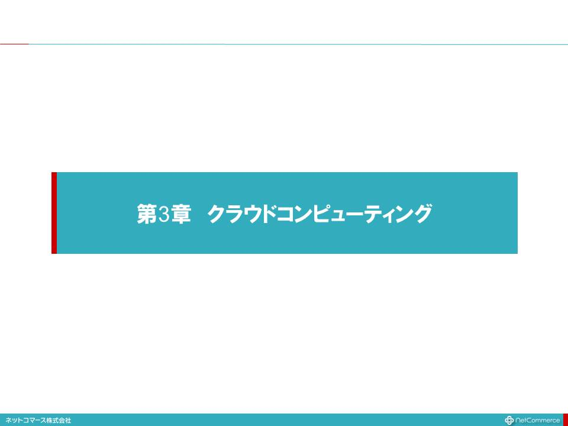
- コレ1枚でわかるクラウドコンピューティング
- 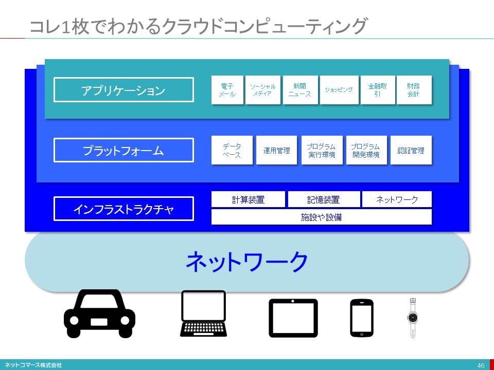
- 「クラウド・コンピューティング」という言葉を知らない人は、もはやいないほどに、広く定着しました。この言葉が使われるようになったのは、2006年、当時GoogleのCEOを努めていたエリック・シュミットの次のスピーチがきっかけだと言われています。
- 「データもプログラムも、サーバー群の上に置いておこう。そういったものは、どこか 雲（クラウド）の中にあればいい。必要なのはブラウザーとインターネットへのアクセス。パソコン、マック、携帯電話、ブラックベリー（スマートフォン）、とにかく手元にあるどんな端末からでも使える。データもデータ処理も、その他あれやこれやもみんなサーバーに、だ。」
- 彼の言う雲（クラウド）とは、インターネットを意味しています。当時、ネットワークの模式図として雲の絵がよく使かわれていたことから、このような表現になりました。
- 改めて整理してみると、次のようになるのでしょう。
- インターネットの向こうに設置したシステム群を使い、
- インターネットとブラウザーが使える様々なデバイスから、
- 情報システムの様々な機能を使える仕組み。
- 「インフラストラクチャー」とは、業務を処理するための計算装置、データを保管するための記憶装置、通信のためのネットワーク、それらを設置し、運用するための施設や設備のことです。「プラットフォーム」とは、様々な業務で共用して利用されるデータベースや運用管理などのソフトウェアのことです「アプリケーション」とは、私たちが最も身近に接する業務サービスのことです。
- それでは、これらから「クラウド・コンピューティング」について詳しく見てゆくことにしましょう。
- 「自家発電モデル」から「発電所モデル」へ
- 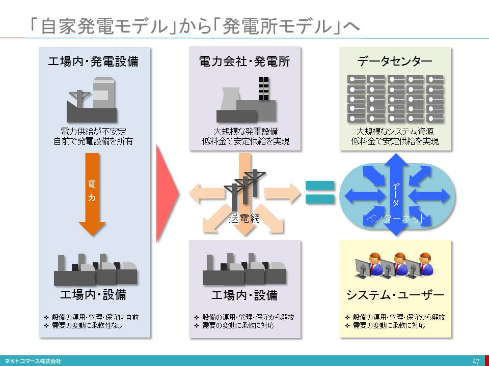
- かつて電力が工業生産に用いられるようになった頃、電力を安定的に確保するために自家発電設備を持つことは常識とされていました。しかし、発電機は高価なうえ、保守・運用も自分たちでまかなわなくてはならず、効率の悪いものでした。また、所有している発電機の能力には限界があり、急な増産や需要の変動に臨機応変に対応できないことも課題となっていました。
- この課題を解決したのが、発電所を構える電力会社でした。技術の進歩とともに、電力会社は送電網によって電力を安定供給できるようになり、効率も上がって料金も下がってきました。また、共用によって、ひとつの工場に大きな電力需要の変動があっても、全体としては相殺され、必要な電力を需要の変動に応じて安定して確保できるようになりました。そうして、もはや自前で発電設備を持つ必要がなくなったのです。
- これを情報システムに置き換えてみければ、何が起こっているかかが、想像がつくのではないでしょうか。
- 発電所は、コンピュータ資源を設置したデータセンターです。送電網は、インターネットです。需要の変動に対しても、能力の上限が決まっている自社システムと異なり、柔軟に対応することができます。
- また、電力と同様に、利用した分だけ支払う従量課金ができるので、大きな初期投資を必要としません。これもまた、発電機を購入しなくてよくなったことと同じです。
- コンセントにプラグを差し込むように、インターネットに接続すればシステム資源を必要な時に必要なだけ手に入れられる時代を迎えたのです。情報システムを「所有」する時代から「使用」する時代への転換です。
- クラウドはシステム資源のECサイト
- 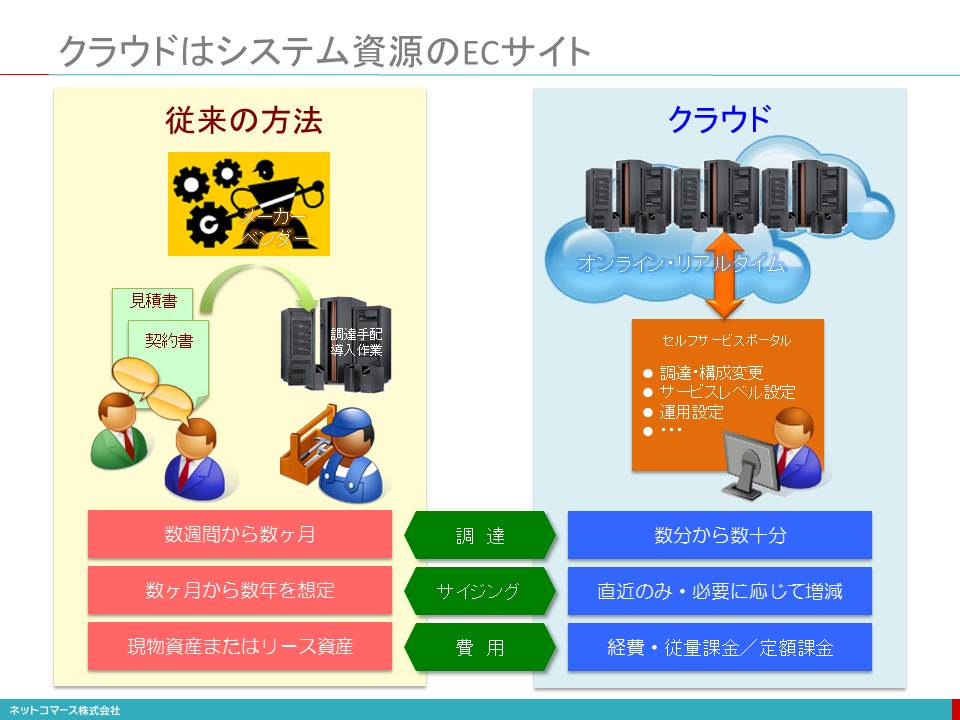
- 情報システムを自社資産として「所有」することから外部サービスとして「使用」するようになると、システム資源の調達や変更が、簡単に行えるようになります。例えば、クラウド以前の「所有」の時代は、次のような多くの手順を踏まなくてはなりませんでした。
- リース期間に合わせ将来の需要を予測してサイジングする。
- ITベンダーにシステム構成の提案を求め見積を依頼し価格交渉を行う。
- 稟議書を作成して承認・決済の手続きを行う。
- 決定したITベンダーに発注する。
- ITベンダーはメーカーに調達を依頼する。
- 調達した機器をキッティングする。
- ユーザー企業のオンサイトに据え付け、ソフトウェアの導入や設定を行う。
- ・・・
- そのため、調達には数週間から数ヶ月かかりました。一方、クラウドであれば、実に簡単です。
- 当面必要なリソースを考えてサイジングをおこなう。
- クラウド・サービスのWebに表示されるメニュー画面（セルフ・サービス・ポータル）からシステム構成を選択する。
- その画面からセキュリティのレベルやバックアップのタイミングなど運用に関わる項目を設定する。
- 調達ボタンを押す。
- この間、数分から数十分といったところでしょう。あっという間です。使用量が増える、運用の要件が変わるなど、変更があれば、その都度メニュー画面で設定し直すことができるので、予測できない未来まで考えて、サイジングする必要はありません。また、電気代のように使用量に応じて支払う料金制度ですから、必要なくなれば、いつでも辞められますので、初期投資リスクを抑えることができます。つまり、クラウドは、「システム資源を調達するためのECサイト」なのです。
- クラウドならではの費用対効果の考え方
- 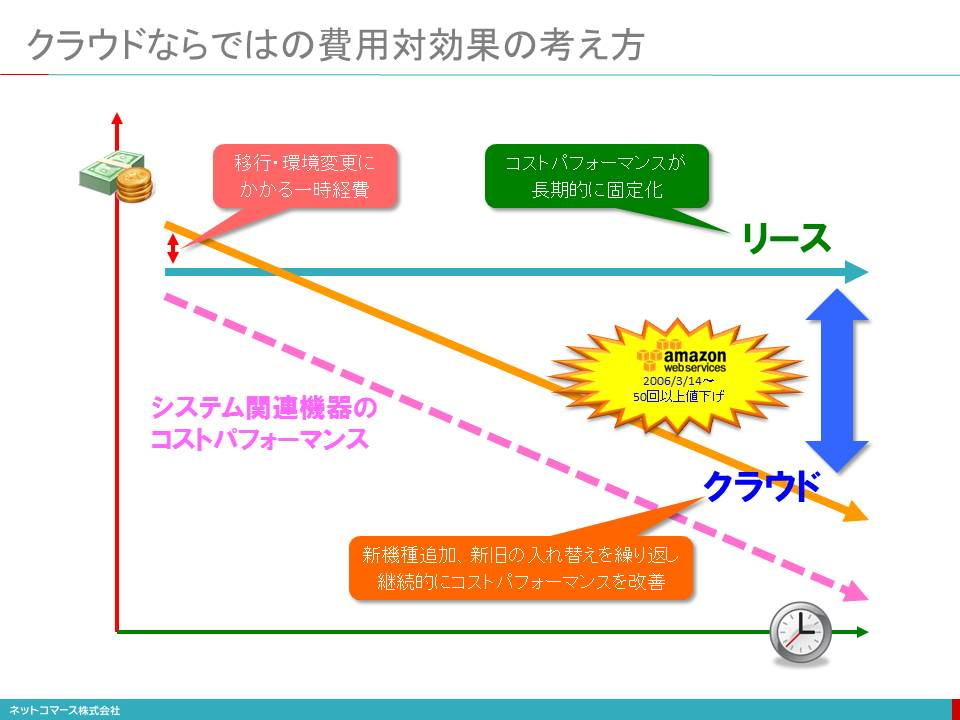
- クラウドの魅力として、費用対効果の高さがあります。従来の「所有」を前提としたシステム資源は、調達すれば資産となり一定期間で償却しなければならず、その間、新しいものに置き換えることはできません。しかし、システム機器の性能は、「18か月ごとに2倍になる」というムーアの法則に当てはめれば、5年間で10倍になります。つまり資産化するとコストパフォーマンスは購入時点から劣化し始め、償却期間中は改善の恩恵を享受できないのです。
- これは、ハードウエアに限らず、ソフトウェアもライセンス資産として保有してしまえば、より機能の優れたものが出現しても、簡単には置き換えることができません。また、バージョンアップの制約や新たな脅威に対するセキュリティ対策、サポートにも問題をきたす場合があります。
- 一方クラウドは、共用が前提です。クラウド事業者は、自社のサービスに合わせ無駄な機能や部材を極力そぎ落とした特注の標準仕様の機器を大量に発注し、低価格で購入しています。さらに、徹底した自動化により人件費を減らしています。また、継続的に最新機器を追加導入し、順次古いものと入れ替え、コストパフォーマンスの継続的改善を行っています。たとえば、世界最大のクラウド事業者であるAmazonは、2006年のサービス開始以来、40回を超える値下げを繰り返してきました。見方を変えれば、クラウドを利用すれば、使える費用が同じであれば、数年後には何倍もの資源を最新の環境で利用できるのです。
- もちろん、すでに所有しているシステムをクラウドに置き換えるにはコストがかかりますが、一旦移行すれば、費用対効果の改善を長期的かつ継続的に享受できるわけです。
- クラウドが生みだすパラダイムシフト
- 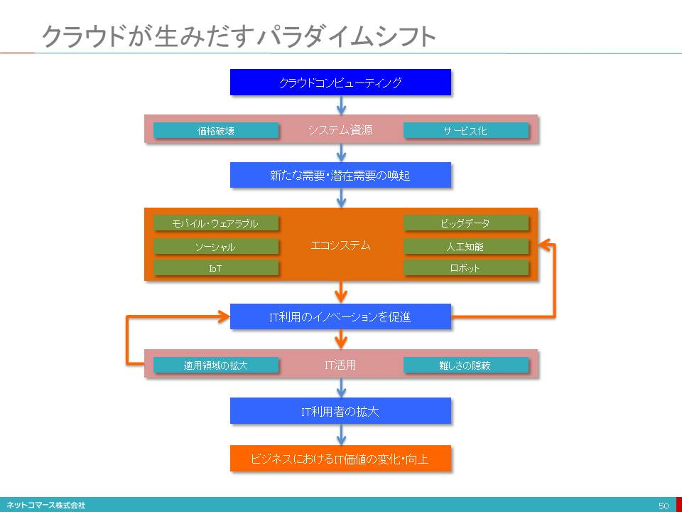
- 【図解】コレ１枚でわかるクラウドがもたらすITの新たな価値
- クラウド・コンピューティングの登場により、私たちの日常やビジネスにおけるITの価値が大きく変化しつつあります。
- クラウドは、システム資源の価格破壊をもたらしました。例えば、世界最大のクラウド・サービス事業者であるAWS（Amazon Web Services）は、2006年のサービス開始以来、約50回、一貫して値下げを繰り返しています。これに追従するように、MicrosoftやGoogleも値下げを繰り返し、熾烈な価格競争を展開しています。コンピューター機器の販売ビジネスでは、到底まねのできない価格競争と言えるでしょう。また、システム資源の調達や運用を従量課金型のサービスとして提供することで、ユーザー企業は、必要最小限のシステム資源を、僅かな運用管理負担で利用できるようになったのです。
- かつて、情報システムを構築し使用するためには、システム資源を購入し、運用管理の専門家を雇わなくてはなりませんでした。それなりの初期投資リスクを覚悟して、取り組まなければならなかったのです。しかし、クラウドの登場によりこの常識は覆されました。そのため、これまでITの利用に二の足を踏んでいた業務領域や新規事業への適用が拡大しつつあります。
- また、スタートアップ企業にとっては、「失敗のコスト」が大きく低減し、容易にチャレンジできる環境が与えられるようになりました。
- 新規事業の成功確率は、１千回に数回といわれるほどハードルの高いものです。そのため、初期投資リスクが大きな時代には、新規事業へのチャレンジは、慎重にならざるを得ず、また、膨大なスタートアップ資金を調達しなければなりませんでした。しかし、クラウドの普及により、少ない初期投資コストで、様々なアイデアを試してみることができるようになったのです。
- このように「失敗のコスト」が、低減することでチャレンジが促され、成功確率は変わらなくても、チャレンジの回数が増えることで、成功の回数も増えつつあります。その結果、イノベーションは促進され、適用業務領域を拡大しています。また、SaaSやPaaSの普及により、高度なシステム機能を１から作り込まなくてもクラウド・サービスとして利用し、これを組み合わせることで、新たなサービスを作れる時代になりました。これによりシステム開発や運用管理と言ったITの難しさは隠蔽され、IT利用者の裾野をこれまでになく拡大しつつあります。
- これに伴い、ビジネスや日常におけるITの価値は、向上してゆきます。同時に、ITは、その存在自身を隠蔽化してしまうほどに、私たちの周囲や環境に溶け込む「ITのアンビエント化」をもたらしつつあると言えるでしょう。
- このようにITの価値は、これまでにも増して大きくなってゆきます。しかし、このような価値を生みだすことを目的とせず、工数提供という手段を価値と捉えるビジネスは、ITの「サービス化」と、それに伴う「難しさの隠蔽」によって、ビジネス・チャンスを失ってゆくことを覚悟しなければならないでしょう。
- クラウドの起源と定義
- 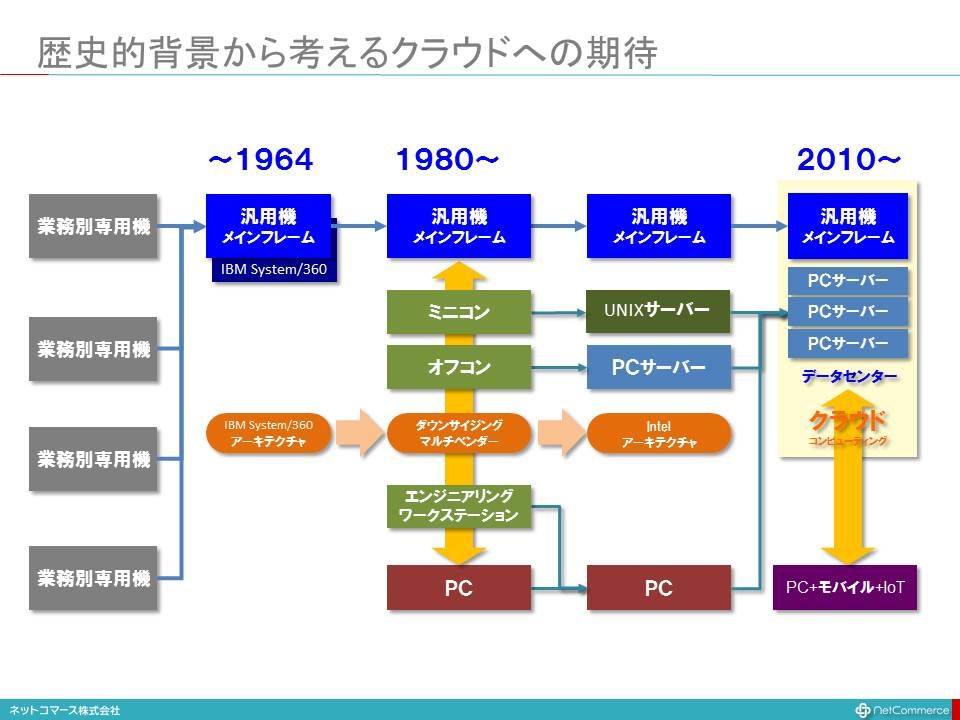
- 歴史的背景から考えるクラウドへの期待
- 情報システム部門の現状から考えるクラウドへの期待
- 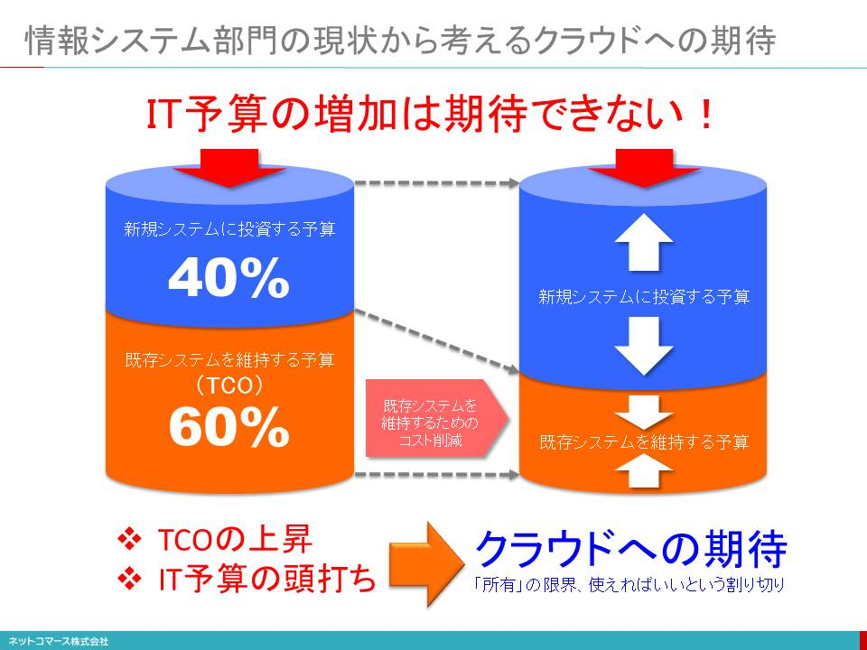
 ITは、業務効率を高めるためには、既に欠かせないものとなっています。また、企業の成長や競争力を維持するためのグローバル展開や新規事業への進出のためにも、ITなしでは対応できません。
ITは、業務効率を高めるためには、既に欠かせないものとなっています。また、企業の成長や競争力を維持するためのグローバル展開や新規事業への進出のためにも、ITなしでは対応できません。- このように、IT利用の範囲が広がり、その重要性が高まるほどに、災害やセキュリティへの対応も、これまでにも増して強く求められるようになりました。また、モバイルやビッグ・データといった、新しいテクノロジーへの対応も業務の現場から求められています。
- こんなIT需要の高まりとは裏腹に、企業内のITに責任を持つ情報システム部門は、ふたつの大きな問題を抱えています。そのひとつが、先ほど説明したTCOの増大です。
- ITへの需要が高まれば、TCOが増大します。それでもIT予算が増えるのであれば、何とか対処できます。しかし、ITに関わるお金は、事業投資とはなかなか見做されず、経費として常に削減の圧力がかかっています。これが、もうひとつの問題です。
- 業務や経営の要請に応えたくても、「所有」している既存のシステムを維持管理するためのTCOにお金が掛かり過ぎて、応えることができません。しかも、IT予算が今後大きく増える見込みもありません。そんな問題を情報システム部門は抱えているのです。
- ならば、「所有」することを辞め、自分達で、システム資源の面倒をみなければ、TCOは削減できるはずです。また、クラウドで提供されているプラットフォームやアプリケーションを使えば、開発工数の削減や、場合によっては開発さえも必要なくなります。そんな期待から、いま「使用」のクラウドへの注目が集まっているのです。
- クラウドの起源と定義
- 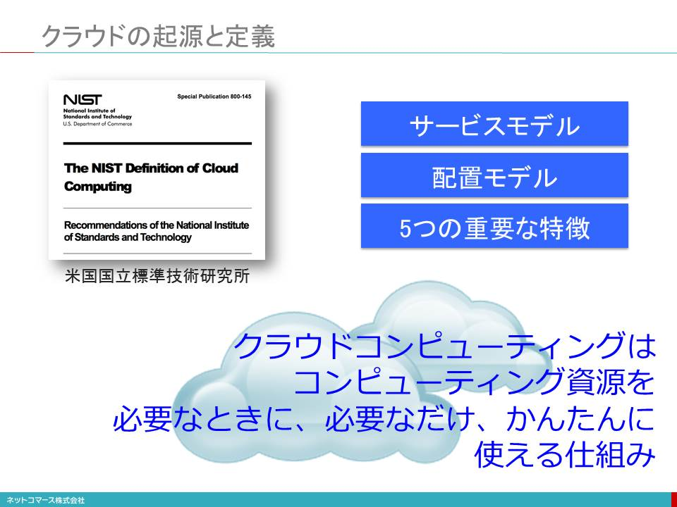
- 「クラウド・コンピューティング」という言葉は、2006年、当時GoogleのCEOを努めていたエリック・シュミットのスピーチがきっかけで使われるようになったことは、前述のとおりです。新しい言葉が大好きなIT業界は、時代の変化や自分達の先進性を喧伝し自社の製品やサービスを売り込むためのキャッチコピーとして、この言葉を盛んに使うようになりました。そのおかげで、各社各様の定義が生まれ、市場に様々な誤解や混乱を生みだしてしまったのです。
- 2009年、こんな混乱に終止符を打ち、業界の健全な発展を意図し、米国商務省の配下にある国立標準技術研究所(National Institute of Standards and Technology : 通称NIST)が、「クラウドの定義(The NIST Definition of Cloud Computing)」を発表、いまでは、広く受け入れられています。この定義は、決して特定の技術や規格を意味するものではなく、考え方の枠組みとして、捉えておくといいでしょう。NISTの定義には、次のような記述があります。
- 「クラウド・コンピューティングとは、ネットワーク、サーバー、ストレージ、アプリケーション、サービスなどの構成可能なコンピューティングリソースの共用プールに対して、便利かつオンデマンドにアクセスでき、最小の管理労力またはサービスプロバイダ間の相互動作によって迅速に提供され利用できるという、モデルのひとつである」。
- ひと言で言えば、「コンピューティング資源を必要なとき必要なだけ簡単に使える仕組み」ということです。さらに、様々なクラウドの利用形態を「サービス・モデル(Service Model)」と「配置モデル(Deployment Model)」に分類、また、クラウドに備わっていなくてはならない「5つの必須の特徴」をあげています。
- それでは、これらについて、ひとつひとつ見てゆくことにしましょう。
- クラウドの定義／サービスモデル （Service Model）
- 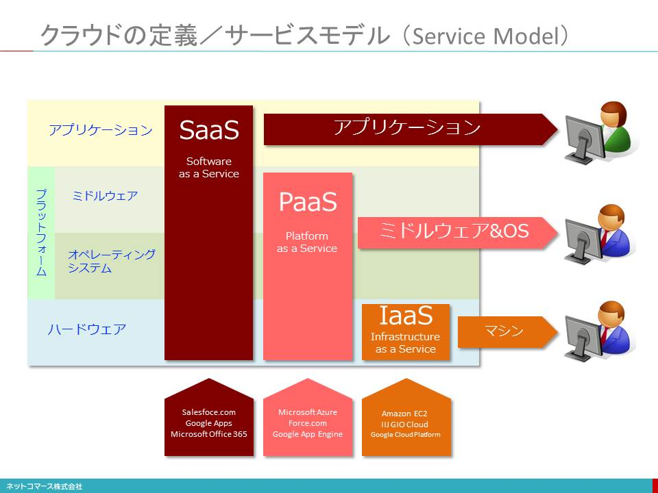
- クラウドをサービスとして提供するシステム資源の違いによって分類する考え方が「サービス・モデル（Service Model）」です。
- SaaS（Software as a Service）は、電子メールやスケジュール管理、文書作成や表計算、財務会計や販売管理などのアプリケーションをネット越しに提供するサービスです。ユーザーは、アプリケーションを動かすためのハードウエアやOS、ミドルウェアの知識がなくても、アプリケーションについての設定や機能を理解していれば使うことができます。
- 例えば、Salesforce.com、Google Apps、Microsoft Office 365などがあります。
- PaaS（Platform as a Service）は、アプリケーションを開発や実行するためのシステム機能をサービスとして提供します。データベース、開発フレームワーク、実行時に必要なライブリーやモジュールを提供します。ユーザーは、インフラ構築や設定に煩わされることなく、アプリケーションを開発し、実行することができます。
- 例えば、Microsoft Azure Platform、Force.com、Google App Engineなどがあげられます。
- IaaS（Infrastructure as a Service）は、サーバー、ストレージなどのシステム資源を提供するサービスです。ユーザーは、自分でOSやミドルウェアを導入し、設定を行わなくてはなりません。その上で動かすアプリケーションも自分で用意します。
- 「所有」するシステムであれば、その都度、ベンダーと交渉し、手続きや据え付け導入作業をしなければなりません。しかしIaaSを使うと、メニュー画面であるセルフサービス・ポータルから、設定するだけで使うことができます。また、ストレージ容量やサーバー数は、必要に応じて、簡単に増減できます。そのスピードと変更に対する柔軟性は、比べものになりません。
- 例えば、Amazon EC2、IIJ GIOクラウド、Google Compute Engineなどがあげられます。
- クラウドの定義／配置モデル (Deployment Model)
- 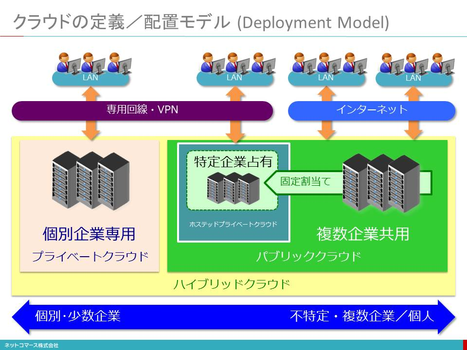
- 次は、「配置モデル（Deployment Model）」です。システムの設置場所の違いによって、分類しようという考え方です。
- ひとつは、複数のユーザー企業がインターネットを介して共用するパブリック・クラウドです。これに対して、企業がシステム資源を自社で所有し、自社専用のクラウドとして使用するプライベート・クラウドがあります。
- もともとクラウド・コンピューティングは、先に紹介したエリック・シュミットの言葉にもあるように、パブリック・クラウドを説明するものでした。しかし、クラウドの技術を自社で占有するシステムに使えば、利用効率を高め、運用管理の負担を軽減できるとの考えから、プライベート・クラウドという言葉が生まれました。
- 他にもNISTの定義には含まれてはいませんが、「バーチャル・プライベート・クラウド」または、「ホステッド・プライベート・クラウド」という言葉が、最近では使われるようになりました。
- 「パブリック・クラウドのコストパフォーマンスを享受したいが、他ユーザーの影響を受けるようでは、使い勝手が悪い。また、インターネットを介することでセキュリティの不安も払拭できない。しかし、プライベート・クラウドを自ら構築するだけの技術力も資金力もない。」
- こんなニーズに応えようというものです。これらは、パブリック・クラウドのシステム資源の一部を特定のユーザー専用に割り当て、他ユーザーには使わせないようにし、専用線や暗号化されたインターネット（VPN: Virtual Private Network）で接続して、あたかも自社専用のプライベート・クラウドのように利用させるサービスです。
- パブリックとプライベートのふたつを組み合わせて利用する形態をハイブリッド・クラウドといいます。
- ハイブリッドクラウド
- 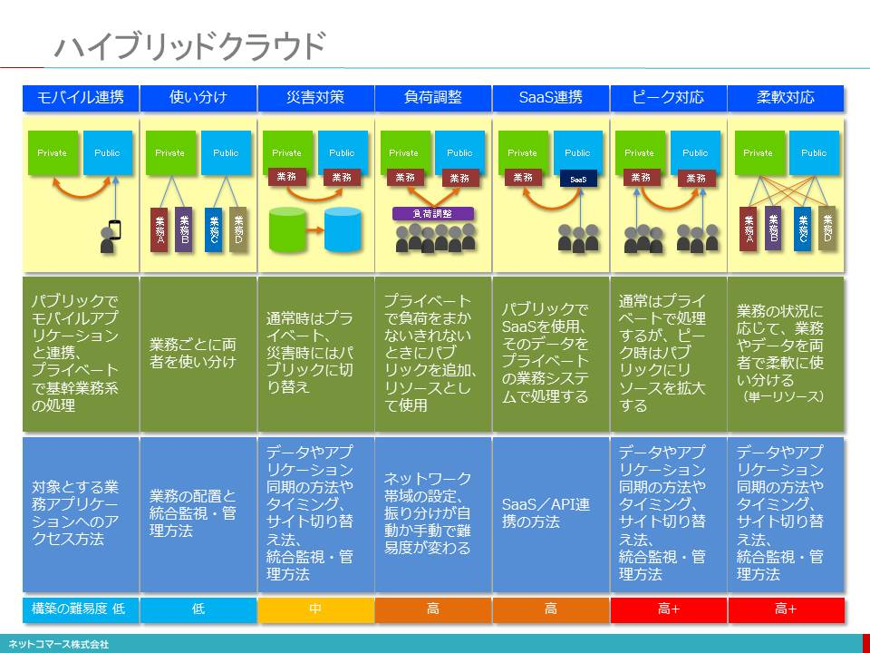
- 【図解】コレ１枚でわかるハイブリッドクラウド
- パブリックとプライベートを組み合わせ、それぞれの得意不得意を補完し合いながら両者を使い分ければ、コストパフォーマンスの高いシステムの使い方ができます。
- 例えば、電子メールや情報共有などのコラボレーション機能など、自社の独自性がないものは、パブリック・クラウドのSaaSを利用し、セキュリティを厳しく管理しなければならない人事情報や個人認証は、プライベート・クラウドでおこない、その情報を使ってSaaSを利用できるようにするという使い方があります。
- また、モバイルで、世界中どこからも使える経費精算サービスをパブリック・クラウドのSaaSとして利用し、そのデータを、プライベート・クラウドの自社専用の会計システムに取り込んで処理するという使い方も考えられます。
- 他にも、アプリケーション・システムを開発する際、社外のプログラマーと共同で作業を進めることや、開発に便利なツールを簡単に利用できるパブリックを使い、本番は自社専用のプライベート・クラウドに移して稼働させるといった使い方もあります。
- さらに、災害への対応を考え、通常はプライベート・クラウドを使用し、データのバックアップや災害時の代替システムをパブリック・クラウドに置いておき、災害のためにプライベート・クラウドが使えなくなったら切り替えて使用し、業務を継続させようという使い方もあります。
- このように、パブリックとプライベートそれぞれの得意をうまく組み合わせ、利便性やコストパフォーマンスの高いシステムを実現しようというのが、ハイブリット・クラウドについての一般的理解です。
- マルチクラウド
- 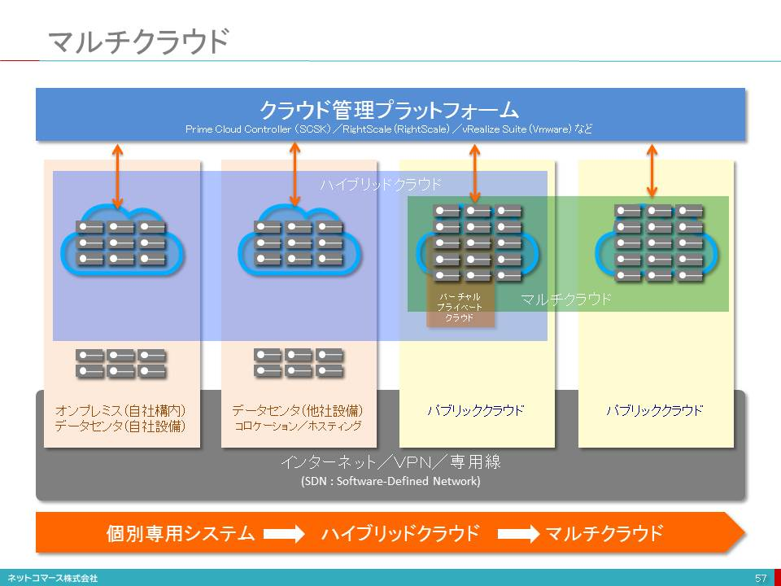
- 【図解】コレ１枚で分かるマルチ・クラウド
- クラウド・コンピューティングとは、何かを改めて整理してみると次のようになります。
- ・コンピューティングリソース（ネットワーク、サーバー、ストレージ、アプリケーション、開発実行環境など）を共用する。
- ・物理的なハードウェアの設置や接続などの作業を必要とせず、ソフトウエア的な設定だけで調達や構築ができる。
- ・ネットワークを介して、利用できる。
- そんなサービスのことです。
- この仕組みを特定の企業や組織で占有利用する場合を「プライベート・クラウド」といいます。
- 例えば、企業や組織にとって独自性の高いアプリケーションの運用に際し、その運用方法やリソースの管理について、独自のやり方にこだわりたい場合や、コンプライアンス上の理由からデータやシステムのハードウェア基盤を他の企業や組織と共用することが赦されない場合などは、この方式が選択されます。ただ、独自にシステム基盤を所有し、これを運用管理しなければならないための投資や、構築、運用管理のためのスキルや人材を自ら確保する必要があります。また、システムを設置する場所や設備を自ら所有するか、自分達専用にデータセンターを借り受けなければなりません。
- 一方、異なる複数の企業や組織（テナントと言います）で共用する場合を「パブリック・クラウド」と言います。
- システムの構築や運用管理は、クラウド・サービス・プロバイダーから提供される機能やサービスの範囲で、自社の業務要件やシステム要件に合わせて設定し、利用します。利用者にとっては、初期の設備投資は不要となり、運用管理の多くもプロバイダーに任せることができるので、少ない運用管理負担で使うことができます。もちろん、複数テナントで利用してもセキュリティを確保し、安定して運用するための機能や仕組みは備わっています。ただ、それぞれのパブリック・クラウドの標準に従い、これら機能や仕組みを使いこなすためのスキルは必要です。
- プライベートもパブリックも、運用の自動化やシステム・リソースの調達や構成変更を簡単にしてくれる機能が備わっている点では同じです。アプリケーション毎にハードウェアを導入し運用管理する場合に比べて、遥かにシステム・リソースの調達や構築、構成変更や運用管理が容易になります。
- 仮想化は、このようなクラウド・コンピューティングを支える技術のひとつです。
- 仮想化の技術を使えば、ハードウェア的な作業を必要とせず、システムの調達や構築が可能になります。ただ、仮想化の技術だけでは、調達や構築、運用管理に関わる様々な設定は、エンジニアが自分でやらなければなりません。クラウドは、これらを自動化することで、その負担を大幅に削減し、エンジニアの生産性を高めてくれます。なお、仮想化は、IaaSのようにサーバーやストレージなどのシステム・インフラをサービスとして提供する場合には使われますが、PaaSやSaaSのようにインフラを隠蔽し、ユーザーには意識させない使い方の場合は、他の方法で複数のテナントに共用させる仕組みが使われる場合が、一般的です。
- このクラウドを機能や役割に応じて組み合わせる利用形態を「ハイブリッド・クラウド」と呼んでいます。
- 両者は、個別独立して運用されますが、使われる技術基盤を標準化された共通の仕組みで作っておければ、データとアプリケーションを容易に移動し、負荷や役割に応じて使い分けることができます。例えば、セキュリティ的に慎重に管理しなければならいデータやアプリケーションは、プライベート・クラウドを使い、汎用的でグローバルなネットワークが必要となるアプリケーションはパブリック・クラウドを使い、両者を必要に応じて連携するなどの使い方です。
- このようなクラウドを構築するために必要な機能を集めたオープンソースのパッケージ・ソフトウェアとして、OpenStackやCloudStackなどがあります。
- これらを使うことで、クラウド基盤の構築が容易になるだけではなく、パブリックとプライベートで同じものを使っていれば、ハイブリット・クラウドの実現も容易になります。
- また、異なるパブリック・クラウド、例えば、Amazon Web Services、Google Cloud Platform、Microsoft Windows Azure Platformなどには、それぞれに得意とする機能やサービスがありますが、これらを目的に応じて組合せ、自分達にとって最適なサービスを実現するクラウドの利用形態を「マルチ・クラウド」と呼びます。
- ユーザーにとって大切なことは、自分達にとって機能やコスト、使い勝手において最適なサービスを実現することです。その背後でどのようなシステムが使われるかは、必ずしも重要なことではありません。システムを提供し、その管理を担う人たちは、パブリック・クラウドやプライベート・クラウド、ハイブリッド・クラウドやマルチ・クラウドを使い分けてゆくことが大切になります。
- ５つの必須の特徴
- 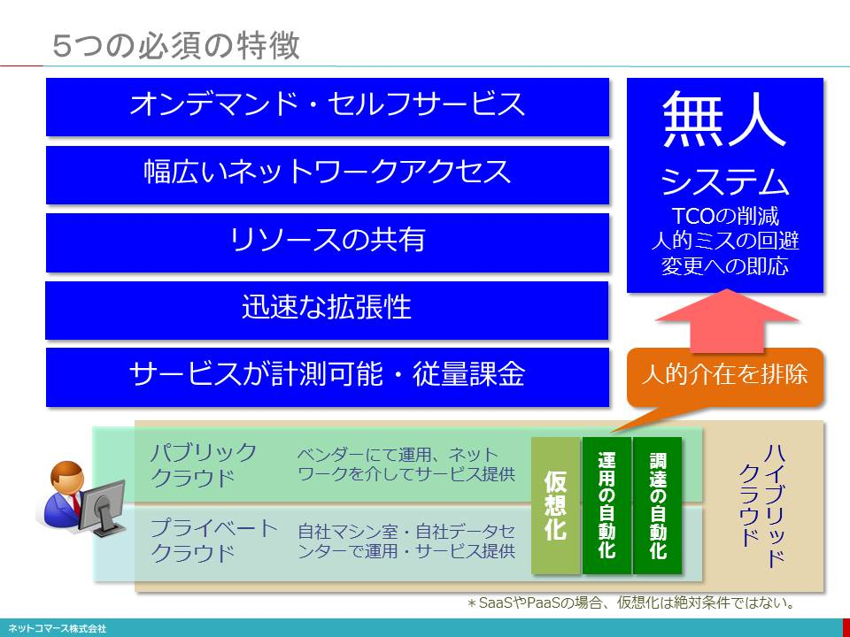
- 次に、NISTのクラウドの定義で述べられている「5つの必須の特徴(Five Essential Characteristics)について、説明しましょう。
- オンデマンド・セルフサービス ：
- ユーザーがWeb画面（セルフサービス・ポータル）からシステムの調達や各種設定を行うと人手を介することなく自動で実行してくれる仕組みを備えていること。
- 幅広いネットワークアクセス :
- PCだけではない様々なデバイスから利用できること。
- リソースの共有 :
- 複数のユーザーでシステム資源を共有し、融通し合える仕組みを備えていること。
- 迅速な拡張性 :
- ユーザーの要求に応じて、システムの拡張や縮小を即座に行えること。
- サービスが計測可能・従量課金 :
- サービスの利用量、例えばCPUやストレージをどれくらい使ったかを電気料金のように計測できる仕組みを持ち、それによって従量課金（使った分だけの支払い）が可能であること。
- これらを実現するため、システム資源をソフトウェア的な設定だけで構築や変更できる「仮想化」、人手をかけずに運用管理できる「運用の自動化」、ユーザーに難しい設定をさせないための「調達の自動化」の技術が使われています。
- これを事業者が設置・運用し、ネット越しにサービスとして提供するのがパブリック・クラウド、自社で設置・運用し、自社内だけで使用するのがプライベート・クラウドです。
- これにより、徹底して人的な介在を排除し、人的ミスの排除、調達や変更の高速化、運用管理の負担軽減を実現し、人件費を削減、テクノロジーの進化に伴うコストパフォーマンスの改善を長期継続的に提供し続けようとしているのです。
- 「5つの必須の特徴」は、クラウド・コンピューティングの本質的な価値を実現する要件と言えるでしょう。
- クラウドコンピューティングのビジネスモデル
- 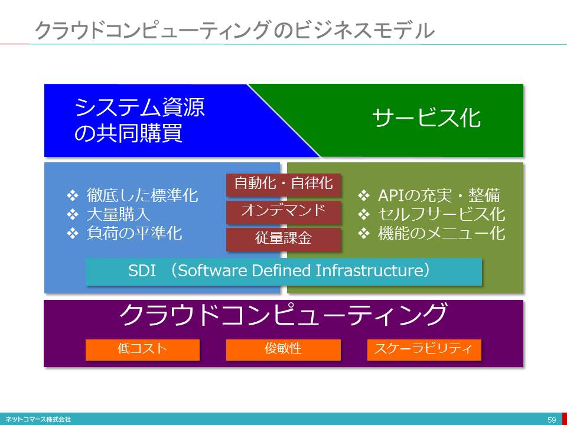
- 【図解】コレ一枚で分かるクラウド・コンピューティングのビジネス・モデル
- クラウド・コンピューティングをビジネス・モデルとして捉えてみると、「システム資源の共同購買」の仕組みと、それを容易に利用できるようにするための「サービス化」の仕組みの組合せと考えることができる。
- 「システム資源の共同購買」とは、一社あるいはひとつの組織でシステム資源を調達するのではなく、共同で大量購入し調達コストを下げると共に、共用することで設備や運用管理のコストを低減しようということだ。そのため、システム機器類の徹底した標準化をすすめ大量購買することで低コストでの調達を実現し、運用管理負担の低減を図っている。
- 例えば、AWSの場合、数百万台のサーバーを保有していると言われているが、サーバーの故障や老朽化に伴う入れ替えや追加増設を考えると、年間十数万台から数十万台のサーバーを購入していると考えられる。世界におけるサーバーの年間出荷台数が、1000万台程度であることから考えると、その多さは驚異的と言えるだろう。当然、市販品を購入することはなく、ODM（Original Design Manufacturing）での調達となることから、量産効果も期待できさらに低コストでの調達を実現している。
- また、多くの企業との共同利用となることから負荷の分散や平準化が期待できる。そのため、企業が個別に調達することに比べ調達台数の抑制も期待でき、低コスト化にも貢献していると考えられる。
- 一方、「サービス化」は、このシステム資源をサービスとして利用できることだ。つまり、物理的な作業を伴わずソフトウェアの設定だけでシステム資源の調達や構成変更を可能にしている。これを支えている仕組みが、SDI（Software-Defined Inftastracture）の技術だ。こちらについては、下記の記事を参考にしていだきたい。
- >> 【図解】コレ1枚で分かるSDI
- この仕組みにより、運用や調達の自動化・自律化を実現し、必要な時に必要なリソースをオンデマンドで調達できるようにしている。さらに、従量課金により使った分だけの支払いとなることから、システム資源調達における初期投資リスクを回避することができる。
- クラウド・コンピューティングは、このような「システム資源の共同購買」と「サービス化」により、システム資源の低コストでの調達を実現し、変更への俊敏性を確保し、需要の変動にも即応できるスケラビリティを確保している。
- クラウドによってもたらされる3つの価値
- 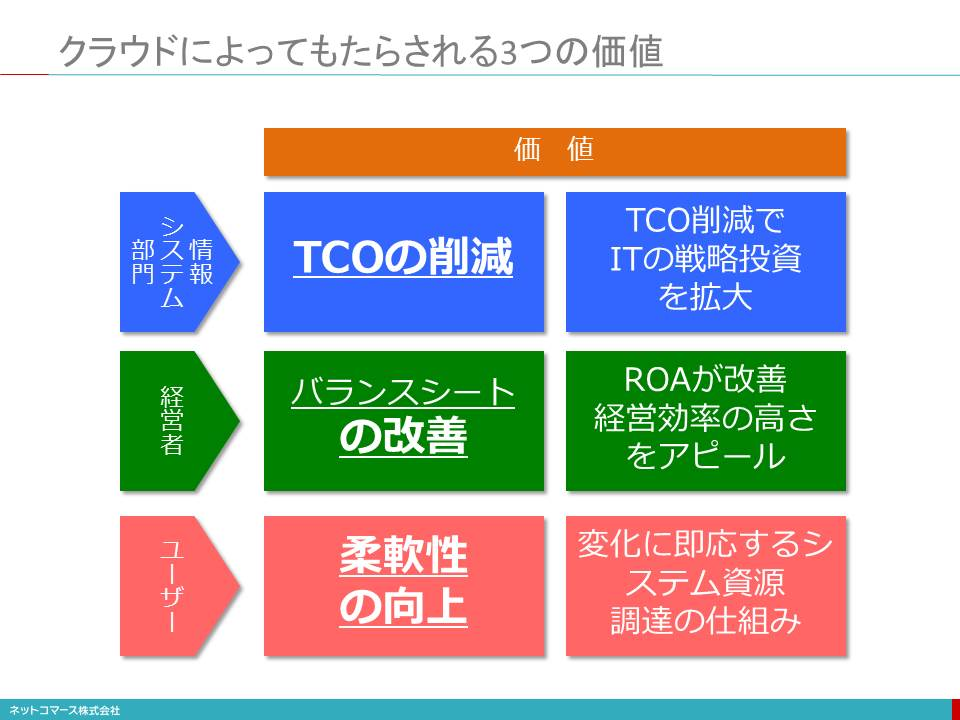
- 情報システム部門 : TCOの削減
- ビジネスのグローバル化やデジタル化が、求められる時代になり、ITへの要求も増え続けています。しかし、IT予算が伸びる見通しはなく、TCOの増加が重くのしかかっている情報システム部門にとって、TCOの削減は、予算面でのメリットを享受できます。
- 経営者 : バランスシートの改善
- パブリック・クラウドであれば、システム資産を増やすことなく経費として処理できます。また、プライベート・クラウドであれば、システムの利用効率が高まり、少ない資産ですみますから、ROA （総資産利益率）やROI(投資収益率)などの経営効率の改善に寄与します。
- ユーザー : 柔軟性の向上
- ビジネスの不確実性の増大は、システムの機能や構成をあらかじめ決めることを難しくしています。その一方で、一旦決まれば、即応が求められ、変更にも俊敏に対応しなければならなりません。クラウドは、システム資源や業務機能を必要な時に必要なだけ利用でき、費用も使っただけ支払うことで対応でき、必要なくなれば、いつでも辞めることができるので、システムを購入し資産として所有しなければならない従来のやり方に比べ、初期投資リスクは少なく変化への対応も柔軟になります。
- 残念ながら、クラウドを使うだけでこのような価値を引き出せる訳ではありません。開発や運用のやり方も「所有」を前提とする手法をそのまま使っていては、難しいでしょう。例えば、性能を十分に出せなかったり、使用料金が嵩んでしまったりと、いったことになりかねません。また、従量課金になりますから、予算の取り方も変わります。
- クラウドを使用すること言うことは、クラウドについての理解を十分に深め、確固たる決心と信念、工夫によって、その価値を引き出す努力が必要になるのです。
- 日米の企業文化の違いとクラウドへの期待
- 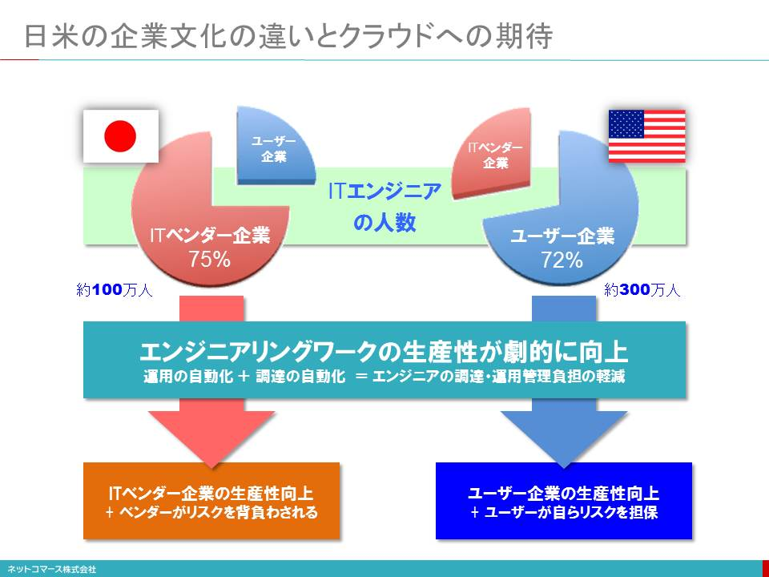
- 【図解】コレ１枚でわかる日米のビジネス文化の違いとクラウドコンピューティング
- クラウド（ここでは、IaaSについて話をします）は、ITエンジニアの7割がユーザー企業に所属する米国で生まれた情報システム資産を調達する仕組みです。
- クラウドは、リソースの調達や構成の変更など、ITエンジニアの生産性を高め、コスト削減に寄与するものです。とすると、ITエンジニアを社内に多く抱える米国では、クラウドはユーザー企業の生産性を高めることに直結しています。
- 一方、我が国のITエンジニアは、7割がSI事業者やITベンダー側に所属しています。従って、このような仕事は、システムの構築や運用を受託しているSI事業者側に任されています。ですから、クラウドは、SI事業者の生産性を向上させます。しかし、これはSI事業者にとっては、案件単価の減少を意味し、メリットはありません。また、調達や構成の変更はリスクを伴う仕事です。米国では、そのリスクをユーザーが引き受けていますが、我が国ではSI事業者が背負わされています。
- このことから見えてくることは、SI事業者にとってクラウドは、案件単価が下がりリスクも大きくなることを意味し、利益相反の関係にあるという事実です。我が国のクラウド・サービスの普及が、米国ほどではないと言われていますが、その背景には、このような事情があるのかもしれません。
- エンジニア構成の配分が、このように日米で逆転してしまっているのは、人材の流動性に違いがあるからです。米国では、大きなプロジェクトがあるときには人を雇い、終了すれば解雇することもさほど難しくありません。必要とあれば、また雇い入れればいいわけです。一方、我が国は、このような流動性はありません。そこで、この人材需要の変動を担保するためにSI事業者へのアウトソーシングを行い、需要変動の振れを担保しているのです。
- ところで、クラウドを使う場合、リソースの調達や構成の変更は、「セルフ・サービス・ポータル」と言われるウエブ画面を使って行われます。必要なシステムの構成や条件を画面から入力することで、直ちに必要なシステム資源を手に入れることができます。
- 従来、このような作業は、業務要件を洗い出し、サイジングを行い、システム要件を決め、それにあわせたシステム構成と選定を行うことが必要でした。そして、価格交渉と見積作業を経て、発注に至ります。その上で、購買手配が行われ、物理マシンの調達、キッティング、据え付け、導入作業、テストを行っていました。この間、数ヶ月かかることも珍しくはありません。このような作業を必要とせずウエブ画面から簡単に行うことができるわけですから、生産性は大いに向上します。
- しかし、我が国のユーザー企業は、先ほどの理由から、このような作業の多くをSI事業者に依存してきました。従って、いまさら自分でやれと言われても、簡単に対処できることではありません。SI事業者も受注単価が下がり、人もいらなくなるわけですから積極的にはなれません。ここに、暗黙の利害の一致が生まれており、これもまたクラウド利用を促進させる足かせとなっていると考えられます。
- このような現実があるわけですから、我が国においては、米国と同じシナリオでクラウドの価値を訴求することは困難といえるでしょう。
- 「セキュリティが不安でパブリッククラウドは使えない」は本当か？
- 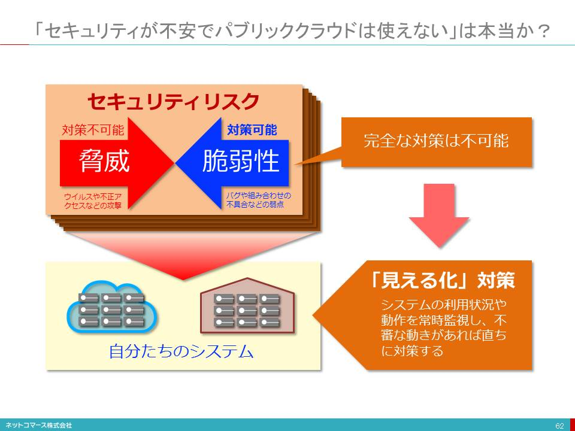
- 【図解】コレ１枚でわかるクラウドのガバナンス
- 「ガバナンスが不安なので、パブリック・クラウドは使えない」という話を聞くことがあります。
- 決して、指示され、命令され、自らも負担を感じてルールや規律を守ることではありません。このような行為は、指示・命令する側にとっても、守る側にとっても大きな負担です。また、結果として、「やらされる」側の人たちの中には、楽をしようと考えてセキュリティやコンプライアンスに反する行為を行うことにもなりかねません。さらに、マニュアルの整備、研修、管理・監視など、コスト的にも作業的にも大きな負担となってしまいます。このような行為は、「ガバナンス」ではありません。
- 本来のガバナンスとは、日常の業務を普通にこなしていれば、「効率」も上がり、「コスト」も抑制され、「リスク」も低減され、「利便性」も向上する。そんな業務の仕組みを作り運用することなのです。
- しかし、この理想を完全に実現することは、コスト的にも技術的にも容易なことではありません。そこで、どこまでなら許容できるかの「許容水準」とどこまでできたら達成とするかの「達成基準」を設定し、最適な施策を打つことになります。そのためには、「効率」、「コスト」、「リスク」、「利便性」の4つの状況がいつでも見えていて、その状況を必要に応じて調整・変更できなくてはなりません。このような仕組みが整っていていることを、「ガバナンスが担保されている」と言います。
- この視点でパブリック・クラウドを評価すると、どうなるのでしょうか。
- 一元管理され利用状況を計測でき、利用ログを把握できる。
- 必要な時に必要な機能／性能／資源を調達・利用できる。
- 管理の対象が少なく、管理負担が少ない。
- なるほど、パブリック・クラウドはガバナンスを担保するための要件を満たしているようです。むしろ、一元管理もされず個別バラバラに導入されているシステムのほうが、よほどガバナンスは担保されていません。
- こう考えるとパブリック・クラウドでは、ガバナンスが担保できないと断じることは、できないことが分かります。
- だからと言って、これら仕組みがあるから、「パブリック・クラウドは、ガバナンスが担保できる安心・安全なシステム」だと断じることもまた短絡的な発想です。パブリック・クラウドは、カバナンスを担保するための「見える化」の仕組みや「調整・変更」が容易にできる仕組みが整っているということにすぎません。それらを使いこなさなければ、パブリック・クラウドといえども、ガバナンスを担保できるわけではありません。この点については、自社で所有し管理するシステムについても同様であり、この点において本質的な違いはないのです。
- サービス事業者とユーザーの役割分担
- 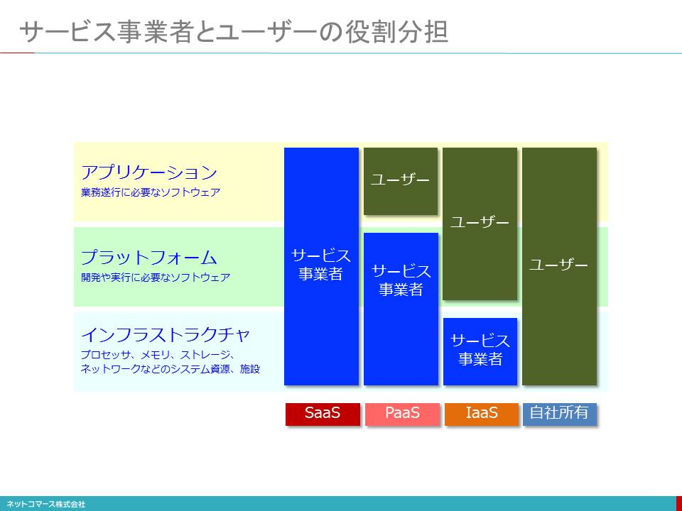
- 所有しているシステムをパブリックへ移行するための勘所
- 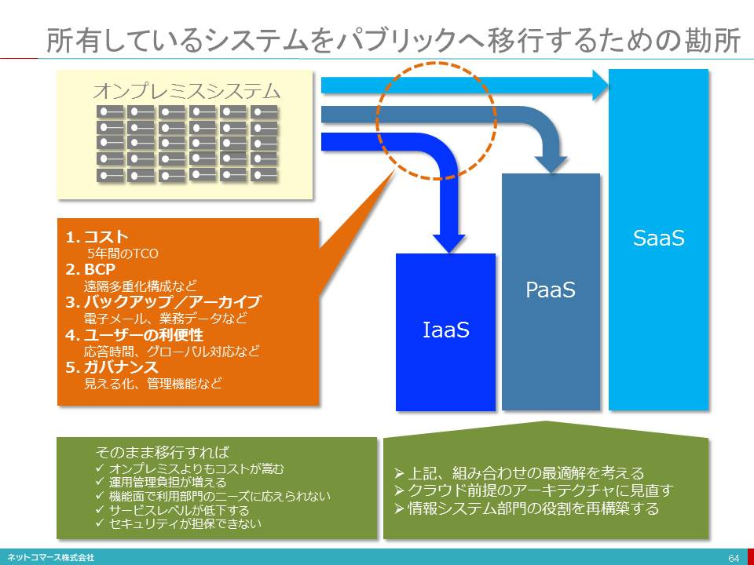